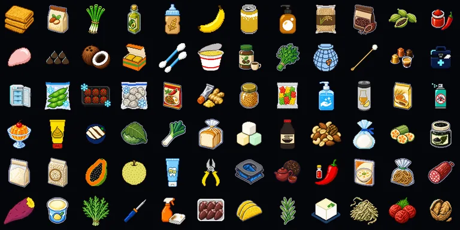
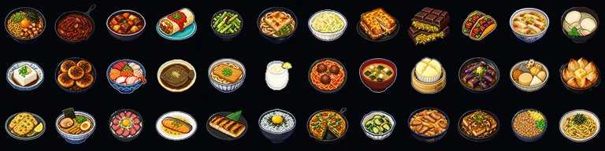
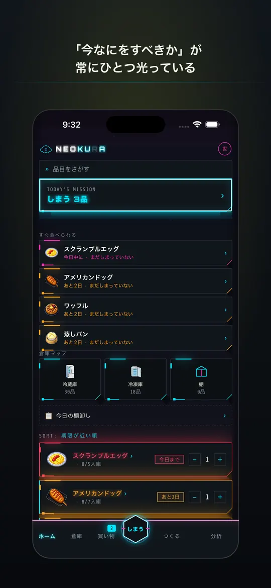
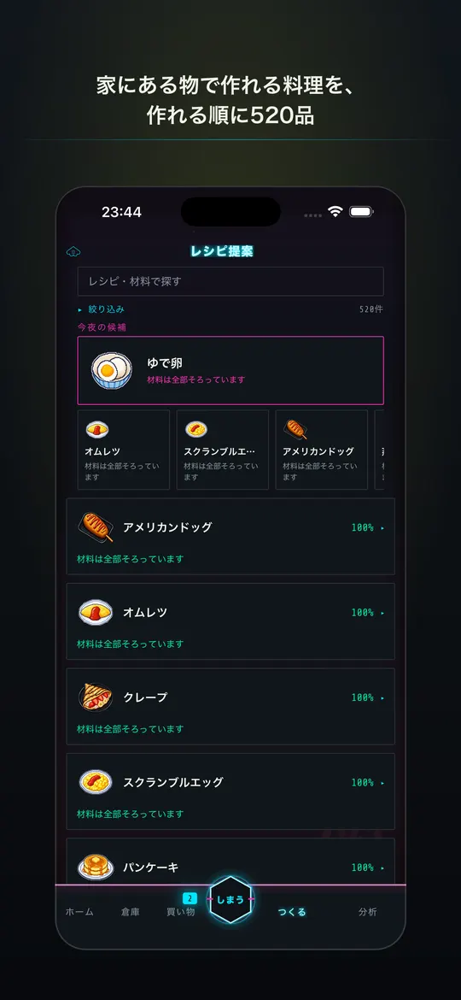
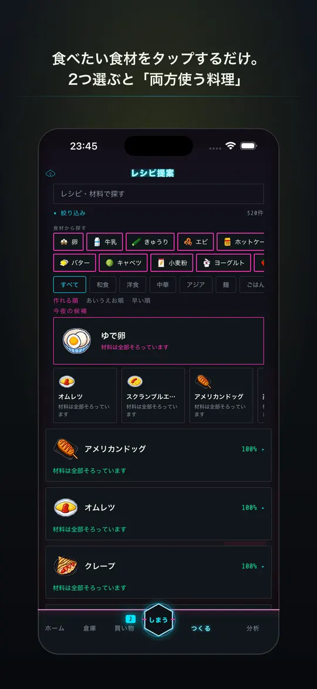
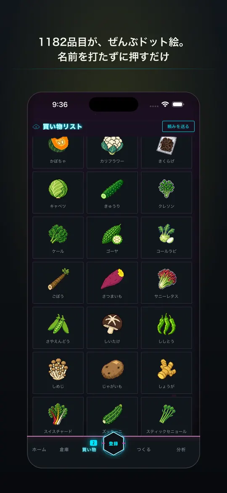
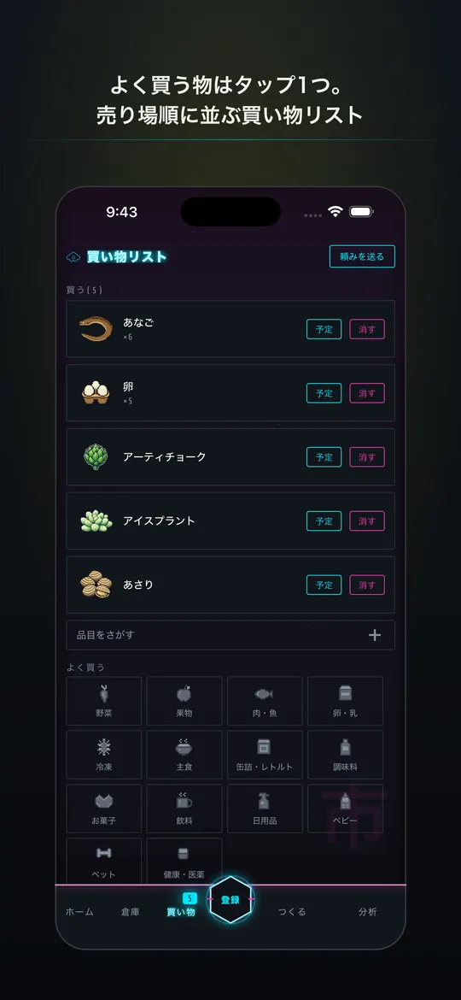
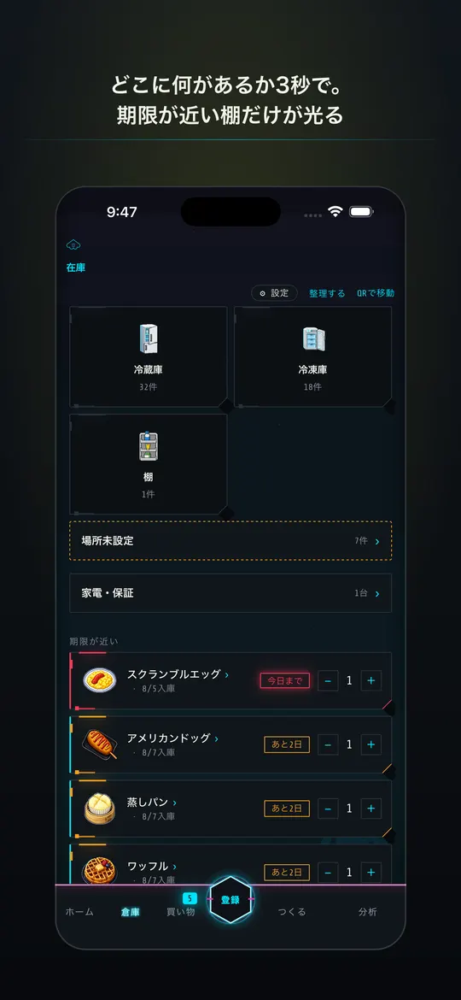

無料 ・ iPhone / iOS 16.4以降 ・ 日本語 / English
家の蔵に、電気を通す。
▸ App Store で入手 無料 ・ iOS 16.4以降
| 名称 | NeoKura ＝ ネオ蔵 × ネオクラウド × ネオン |
| 管理対象 | 冷蔵庫 / 冷凍庫 / パントリー / 倉庫 / 防災備蓄 / 家電の保証 |
| 品目カタログ | 1,182 種（すべてドット絵。名前を打たずに押すだけ） |
| レシピ | 520 品（家にある材料で作れる順に並ぶ） |
| 期限警告 | 切れかけのネオン看板のように、明滅して知らせる |
| 通信 | アカウント不要。ネットを切っても全機能が動く |
| 無料の範囲 | 品目200・保管場所3つまで。機能の制限はありません |
| 価格 | 無料（NeoKura Pro：月額 ¥400 / 年額 ¥3,000・14日間無料） |
| 非対応 | 家庭以外の在庫管理。それでいい。 |

1,182品目のうち72点。名前を打たずに、押すだけ。
────────────── OPERATION ──────────────
よく買う物はタップ1つでリストへ。店内モードは売り場順に並び、帰宅後は「しまう」を押すだけ。置き場所は前回から覚えています。
家じゅうの在庫を一望。買う前に「家にある」と出るので二重買いが止まり、冷凍庫で化石になった食材も見つかります。
赤い文字で「あと2日」と書くより、切れかけた蛍光灯のように光っているほうが視界の端でも気づきます。演出が苦手な方は設定でまとめて消せます。
タイルをタップするだけ。2つ選ぶと「両方使う料理」に絞れます。避けたい食材を選べば、それを含む料理を別に分けられます（表示義務8品目＋推奨20品目）。
家族の端末と在庫・買い物リストを同期。「あれ買ってきて」が頼みリストに届きます。1人が課金すれば世帯全員に行き渡ります。
────────────── FUNCTIONS ─────────────
| 登録のしかた | ドット絵タイル / 品目名で検索 / バーコード（JAN）/ 音声 / レシートの撮影（OCR）/ QRラベル |
| 検索 | 漢字・ひらがな・カタカナ・ローマ字のどれでも同じ食材に当たる |
| 買い物 | 店内モード（売り場順）/ 予定日を決めて買う / 家族への「頼み」/ 発注点を割ったら自動でリストへ / LINEなどへ共有 |
| しまう | スワイプで入庫。置き場所は前回から自動。期限はチップを1タップで調整。 その場で写真とメモも残せる |
| 使う・減らす | スワイプで出庫 / レシピの「作った」で材料をまとめて消費 / 廃棄は理由つきで記録 / どれも取り消せる |
| 倉庫 | 区画マップ / 場所の追加・編集 / 棚卸し（カウント→差分確認→確定）/ 今日の1問だけ確認するサイクルカウント |
| 料理 | 在庫から作れる順に520品 / 食材から逆引き（2つ選ぶとAND）/ アレルギーで分ける / 手順・コツ・調理時間 / 材料がどの棚にあるか |
| 防災 | ローリングストック。家族の人数×日数から必要量を逆算して不足を出す |
| 家電 | 保証期限の管理。切れる30日前・7日前・当日に通知 |
| 通知 | 期限アラート / 買い物リマインダー（曜日・時刻指定）/ 週次サマリ / 予定買いの当日朝 |
| 記録 | 購入履歴・よく買う品目・捨てたものの可視化。金額は任意入力で、 入れなければ出ません |
| 実績 | 38種の称号。解除すると階級と限定の配色が手に入る |
| データ | CSVで書き出し・読み込み（無料） |
| 見た目 | テーマと配色を切り替え。演出・音・触覚はそれぞれ個別にオフ |
──────────── FREE / PRO ─────────────
| 無料でできる | 上に書いた機能すべて。CSVの書き出しも含みます。 制限は品目200・保管場所3つという「量」だけです |
| Pro：家族共有 | 家族の端末と在庫・買い物リストを同期。 1人が課金すれば世帯全員に行き渡ります |
| Pro：買い物予測 | 使うペースを覚えて、切れる前に買い物リストへ出します |
| Pro：献立の学習 | 作った料理の傾向から、提案があなたの好みに寄っていきます |
| Pro：上限の解除 | 品目・保管場所が無制限。全テーマ使い放題 |

520品のうち36点。家にある材料で作れる順に並びます。
──────────────── WHY ────────────────
家庭の在庫管理は、規模が小さいだけで業務用倉庫と同じ問題を扱っています。先入先出、棚の位置、期限、発注点。業務側には何十年ぶんの解法があるのに、家庭向けアプリはそれを使わず「メモ帳の延長」で作られている。そこをまるごと持ち込みました。
文字を打たせないためです。1,182品目を文字のリストで出すと探せませんが、絵なら見つかります。ドット絵にしたのは、小さいサイズでも輪郭が潰れず、1,723点を同じ密度で描き切れる形式だから。
期限を「読ませない」ためです。赤い文字より、切れかけた蛍光灯のように明滅しているほうが視界の端で気づきます。夜の倉庫街という設定は、その明滅に理由を与えるために選びました。
在庫数を上書きすることはなく、すべての変化を追記だけの取引として記録しています。取り消しは削除ではなく逆仕訳。だから画面の数量は常に「実際に起きたことの合計」と一致します。
────────────── SCREENS ──────────────






無料 ・ iPhone / iOS 16.4以降 ・ 日本語 / English
──────────────── FAQ ────────────────